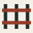

Operational data
Truss → PostgreSQL
Query the graph through its storage realization: catalog, objects, keys, edges and declared property homes. Fields can live beyond JSONB.
Explore Truss ↗
weft / a DocumentDrivenDX projectLogical queries. Physical precision.
A universal UMF-powered SQL dialect with pluggable storage backends. Write against your model. Compile for where your data lives.
SELECT c.name, SUM(o.total)
FROM Customer c
JOIN Orders o
ON o.customer_id = c.id
GROUP BY c.nameObjects, keys, edges.
Lower logical fields into Truss’s catalog and declared property homes, including JSONB, typed scalar and compound storage.
Conceptual query and mapping. This selector explains the backends; it does not execute or compile SQL.
01 / The approach
UMF supplies logical meaning. Weft resolves your query against it. A registered backend translates the plan into its own storage layout and SQL dialect.
Query logical records, fields and keys in Weft SQL.
Check names and types against supplied, pinned UMF modules.
Admit a storage binding and the target’s supported semantics.
Return SQL, parameters, result types and host obligations.
02 / Initial backends
Physical mappings belong to each backend. Logical meaning stays in the shared compiler.
Operational data
Query the graph through its storage realization: catalog, objects, keys, edges and declared property homes. Fields can live beyond JSONB.
Explore Truss ↗Warehouse data
Map the same logical operations onto Ashlar’s warehouse layout, with publication context and backend-specific numeric and presence contracts.
Explore Ashlar ↗03 / The execution contract
A compiled query carries the information a host needs to preserve its meaning.
A deliberate boundary
The host owns database connections, caller authentication, authorization, consistent read context and result publication.
If a selected meaning cannot be preserved, compilation stops. Unknown semantics do not become a quiet coercion.
Shared Rust core. Native Python embedding. Browser WASM with a TypeScript interface.
Build on the model.